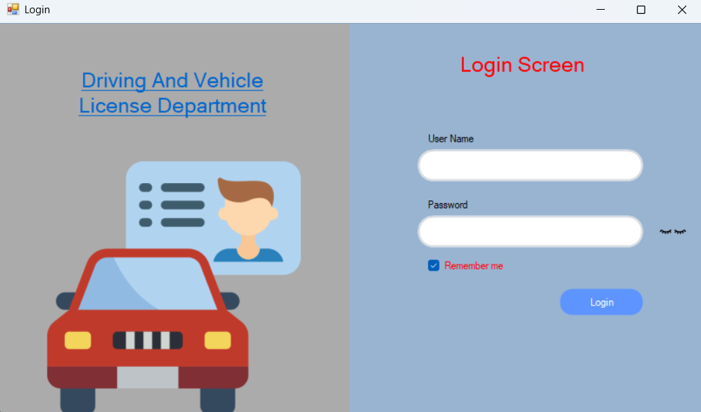
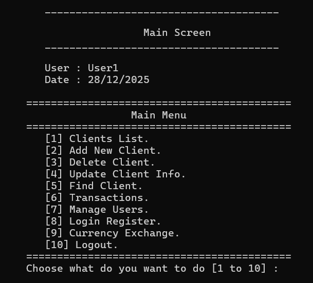
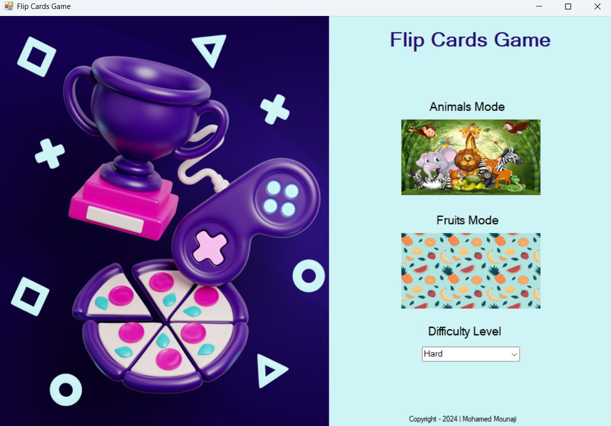

Programmiersprachen
- C#
- C++
- SQL
📍 Casablanca, Marokko
Spezialisiert auf skalierbare Backend-Systeme und SQL-Datenbanken.
Strukturiert, lösungsorientiert und bereit für neue Herausforderungen in Deutschland.
Ich bin ein leidenschaftlicher Backend-Entwickler mit rund zwei Jahren praktischer Erfahrung in der Softwareentwicklung. Mein technischer Schwerpunkt liegt auf der Entwicklung robuster und wartbarer Systeme mit .NET, C# und SQL Server.
Neben meiner Tätigkeit im Bereich Softwareentwicklung war ich als Informatik- und Englischlehrer tätig. Diese Erfahrungen haben meine Fähigkeit gestärkt, komplexe Probleme strukturiert zu analysieren und technische Inhalte verständlich zu vermitteln. Ich arbeite lösungsorientiert und lege großen Wert auf sauberen und wartbaren Code.
Mein Ziel ist es, meine Fachkenntnisse in den deutschen IT-Arbeitsmarkt einzubringen. Ich suche gezielt nach einer Möglichkeit für eine Ausbildung oder einen Direkteinstieg als Fachinformatiker für Anwendungsentwicklung, bei dem ich meine bisherigen Kenntnisse einbringen und mich fachlich weiterentwickeln kann.
Mein Ziel ist der Einstieg in den deutschen Arbeitsmarkt als Fachinformatiker für Anwendungsentwicklung. Ich strebe eine fundierte Ausbildung oder eine berufliche Tätigkeit an, um meine praktischen Erfahrungen im .NET-Bereich in einem professionellen deutschen Umfeld zu vertiefen.
Ich bin fest entschlossen, meinen Lebensmittelpunkt nach Deutschland zu verlegen und suche eine langfristige Perspektive in einem innovativen Team. Dabei bringe ich eine hohe Lernbereitschaft, Flexibilität und die Motivation mit, aktiv zum Unternehmenserfolg beizutragen.

Entwicklung eines Verwaltungssystems zur Automatisierung von Führerscheinprozessen wie Ausstellung, Erneuerung, Prüfungsverwaltung und Benutzerkontrolle. Fokus auf Datenintegrität, Validierung und effiziente Backend-Logik.

Entwicklung eines objektorientierten Bankensystems in C++ zur Verwaltung von Kunden, Transaktionen und Benutzerzugängen. Das System bietet Funktionen wie Kontoverwaltung, Geldtransfers, Login-Sicherheit und Währungsumrechnung.

Entwicklung eines interaktiven Memory-Spiels in C# mit Windows Forms. Spieler müssen Kartenpaare mit verschiedenen Themen und Schwierigkeitsstufen finden, um Gedächtnis und Konzentration zu trainieren.
Casablanca, Marokko
Casablanca, Marokko
Neben meiner formalen Ausbildung habe ich mich intensiv im Bereich der Softwareentwicklung weitergebildet. Ich habe erfolgreich über 30 Online-Kurse absolviert und besitze mehr als 18 Zertifikate mit Schwerpunkten auf Programmierung, Backend-Entwicklung (.NET), Datenbankmanagement und OOP-Prinzipien. Mein Wissen vertiefe ich kontinuierlich durch autodidaktisches Lernen und die Umsetzung praktischer Projekte.
Haben Sie Fragen zu meinem Profil oder sehen Sie Potenzial für eine Zusammenarbeit? Ich freue mich über Ihre Nachricht.